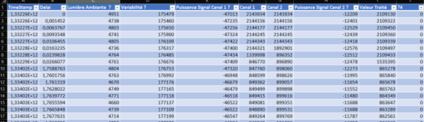

Acquisition de donnée capteurs d’une Pixel Watch
Capteur PPG
Dispositif permettant de mesurer les variations du volume sanguins, permets donc d’obtenir la fréquence cardiaque. Dans le cadre la pixel Watch, le capteur dispose de 2 canaux différents, un premier émettant une lumière verte et un second, une lumière rouge (meilleure précision)
Fonctionnement
Le capteur PPG fonctionne en émettant une lumière à travers la peau, généralement à l'aide de diodes qui émettent de la lumière verte ou rouge. La lumière est absorbée par le sang dans les vaisseaux. Lorsque le cœur bat et le sang circule, le volume de sang dans les vaisseaux change, ce qui modifie l'absorption de la lumière, et nous permet donc de calculer une fréquence cardiaque
Acquisition des données
- Fonctionnement avec des listenener
Analyse des données
Selon le chipset utilisé (AFE4950 de chez Texas Instrument), une ou plusieurs valeurs peuvent être renvoyé. Dans le cadre de la Pixel Watch, c’est un tableau de 16 valeurs qui est renvoyé. Sur une montre de marque différente (eg. La fossil, uniquement la valeur traité).
Sur les 16 valeurs, on peut émettre différentes hypothèses quant à la signification des valeurs. En effet, Google étant très opaque sur ce sujet, au cours de nombreux test nous avons déduit que chaque colonne pouvait faire référence, au TimeStamp en millisecondes pour la première colonne, au délai d’acquisition pour la seconde (temps depuis la première acquisition), en seconde . On peut également trouver la valeur du capteur de lumière ambiante en 3ème position, qui est assez utile pour le traitement de signal. Les colonnes 6 et 7 devrait correspondre au signal de chaque canal, du fait de leur similarité.
La valeur permettant d’indiquer le signal traité, du capteur de PPG est la dernière qui n’est pas égale à 0. Elle nous permet d’obtenir le graphique suivant :

On notera des variations du signal verticale en raison des mouvements de l’invidu portant la montre.